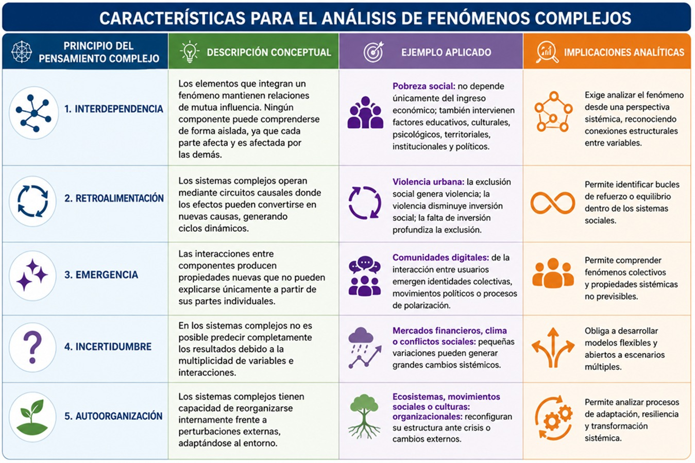
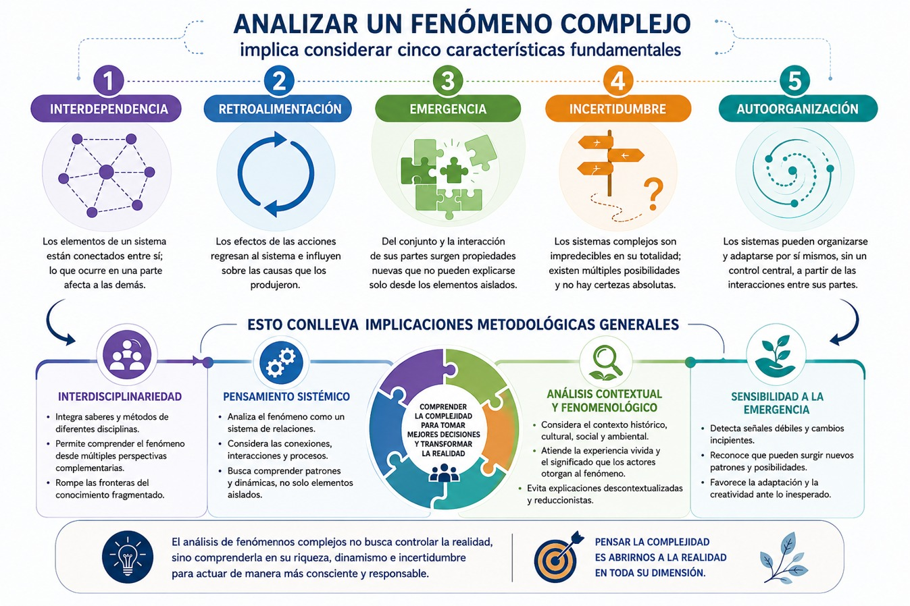
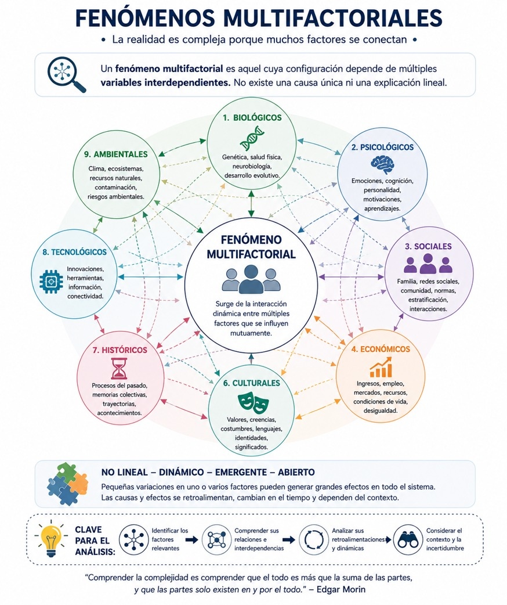
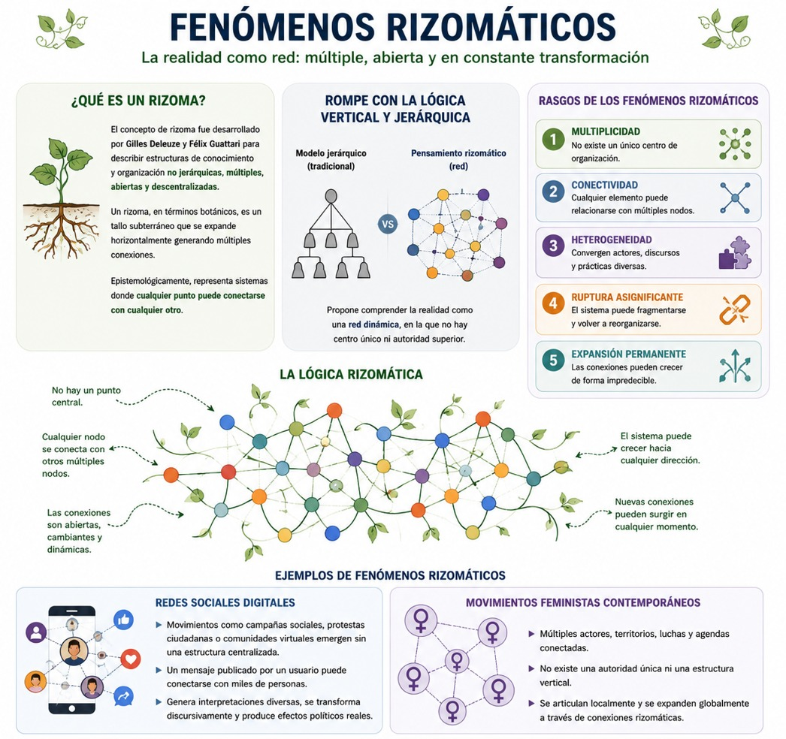

Como hemos visto en todo este bloque de aprendizaje, la realidad contemporánea se caracteriza por una creciente densidad de interacciones, interdependencias e incertidumbres que desafían los modelos clásicos de explicación lineal. Los problemas sociales, culturales, políticos, económicos y ambientales que enfrenta la humanidad difícilmente pueden comprenderse desde perspectivas fragmentadas o deterministas. Fenómenos como el cambio climático, la violencia social, la desigualdad estructural, las migraciones internacionales, la transformación digital o la crisis de legitimidad institucional no responden a una única causa ni pueden resolverse mediante intervenciones aisladas.
Fue en este contexto que emergió el paradigma del pensamiento complejo como una alternativa epistemológica capaz de comprender la realidad desde la articulación entre orden, desorden, organización, incertidumbre, emergencia y multidimensionalidad. De este modo, sabemos ahora que la complejidad aparece cuando podemos identificar un tejido interdependiente, interactivo e interretroactivo entre las partes y el todo.
Desde esta perspectiva, analizar fenómenos complejos implica reconocer relaciones no lineales, dinámicas de retroalimentación y estructuras múltiples que configuran sistemas abiertos. A su vez, identificar fenómenos multifactoriales y rizomáticos supone abandonar modelos jerárquicos y adoptar esquemas de comprensión más flexibles, relacionales y transdisciplinarios.
El análisis de fenómenos complejos constituye una forma de aproximarse a la realidad que supera la lógica reduccionista de la modernidad científica. Durante siglos, el conocimiento occidental privilegió la fragmentación analítica, suponiendo que comprender las partes equivalía a comprender el todo. Sin embargo, las ciencias contemporáneas han demostrado que numerosos fenómenos poseen propiedades emergentes que no pueden explicarse únicamente por la suma de sus componentes.
En ese sentido, el análisis de fenómenos complejos implica reconocer dos dimensiones esenciales: la complejidad de detalle, relacionada con la cantidad de elementos que componen un sistema, y la complejidad dinámica, vinculada con las relaciones e interacciones entre dichos elementos. Esta segunda dimensión resulta especialmente relevante, pues evidencia que un sistema no es solamente una colección de partes, sino una red activa de relaciones.
Además de ello, recuperando a Morin, la teoría de sistemas y la postura fenomenológica, para analizar fenómenos complejos debemos también comprender al Otro en su contexto particular, conocer lo que las cosas le significan y por tanto conocer su lenguaje, la forma en la que dice las cosas, ya que sólo podemos descifrar el discurso a partir del intercambio de ideas para convivir en un mundo diverso, diferente y globalizado. (Comboni y Juárez 2012).
Desde esta perspectiva, un fenómeno complejo presenta al menos cinco características fundamentales: Interdependencia, retroalimentación, emergencia, incertidumbre y autoorganización. Y ello conlleva implicaciones metodológicas generales como los siguientes enfoques: interdisciplinariedad, pensamiento sistémico, análisis contextual y fenomenológico, y sensibilidad a la emergencia. En los gráficos puedes ver las implicaciones y ejemplos de ello:


En síntesis, desde el punto de vista metodológico, analizar fenómenos complejos exige enfoques interdisciplinarios, pensamiento sistémico, análisis contextual y sensibilidad frente a lo emergente. No basta con medir variables aisladas; es necesario comprender patrones de interacción, dinámicas históricas y relaciones estructurales.
- Comboni, Sonia y Juárez, José (2012). Epistemología del pensamiento complejo. México: Reencuentro Universidad Autónoma Metropolitana. Núm. 65, diciembre, 38-51.
- Carreño, Diana; Fuentes, Sandra; Ospina, Ángela; Pérez, Jorge; Redondo, Johan y Vargas, María (2014). Estructura del Pensamiento Complejo, Colección de Ciencias Básicas, Cuaderno de Investigación. Colombia: Ediciones EAN.
Identificación de fenómenos multifactoriales y rizomáticos
Uno de los desafíos más importantes dentro del pensamiento complejo para el análisis de fenómenos complejos consiste en identificar las lógicas multifactoriales y rizomáticas bajo las que éstos operan, veamos qué significa y cómo lo podemos lograr:
Fenómenos multifactoriales
Un fenómeno multifactorial es aquel cuya configuración depende de múltiples variables interdependientes. No existe una causa única ni una explicación lineal. En términos de complejidad, estos fenómenos requieren reconocer la coexistencia simultánea de factores: biológicos, psicológicos, sociales, económicos, políticos, culturales, históricos, tecnológicos y ambientales como lo podemos apreciar en el diagrama:

Fenómenos rizomáticos
El concepto de rizoma fue desarrollado por Gilles Deleuze y Félix Guattari para describir estructuras de conocimiento y organización no jerárquicas, múltiples, abiertas y descentralizadas. Un rizoma, en términos botánicos, es un tallo subterráneo que se expande horizontalmente generando múltiples conexiones. Epistemológicamente, representa sistemas donde cualquier punto puede conectarse con cualquier otro.
El pensamiento rizomático rompe con la lógica vertical y jerárquica del conocimiento moderno y propone comprender la realidad como red.
Algunos rasgos de los fenómenos rizomáticos son: multiplicidad, conectividad, heterogeneidad, ruptura asignificante, expansión permanente, como podemos ver en el siguiente grafico:

En conclusión, ahora sabemos que el análisis de fenómenos complejos representa una necesidad epistemológica fundamental para comprender la realidad contemporánea. Los sistemas humanos, sociales y naturales operan mediante dinámicas de interacción, retroalimentación, emergencia e incertidumbre que desbordan los modelos lineales tradicionales.
Es importante para nosotras y nosotros como universitarios y futuros profesionistas, identificar fenómenos multifactoriales que permitan reconocer la coexistencia de múltiples causas interdependientes, así mismo identificar fenómenos rizomáticos permitan comprender estructuras descentralizadas, abiertas y en permanente transformación.
Para finalizar este bloque es fundamental subrayar que desde el pensamiento complejo, comprender ya no significa simplificar, sino aprender a habitar la incertidumbre, reconocer la pluralidad de relaciones y construir explicaciones capaces de integrar diversidad, contradicción y cambio.
- Carreño, Diana; Fuentes, Sandra; Ospina, Ángela; Pérez, Jorge; Redondo, Johan y Vargas, María (2014). Estructura del Pensamiento Complejo, Colección de Ciencias Básicas, Cuaderno de Investigación. Colombia: Ediciones EAN.